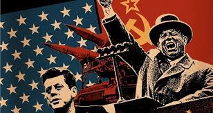
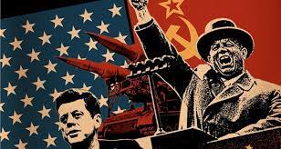
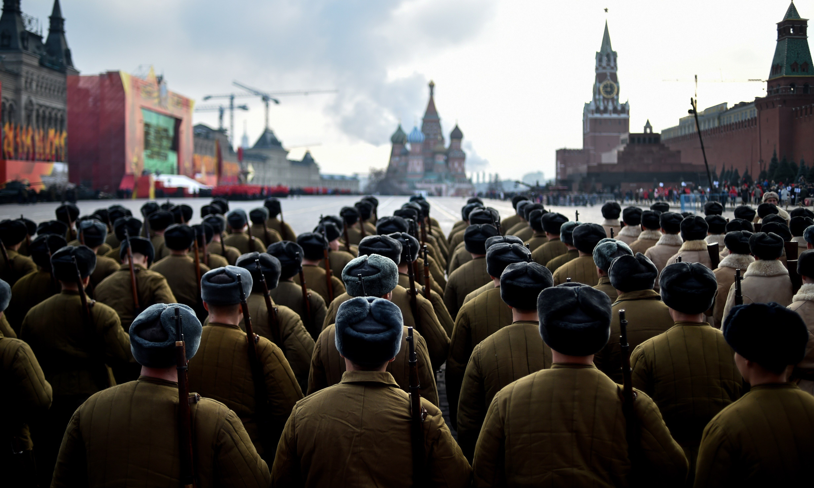
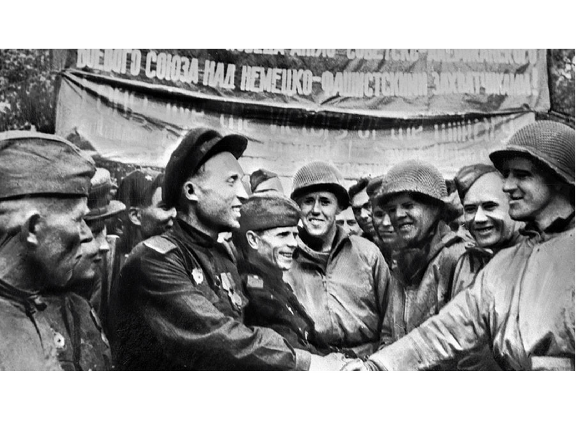
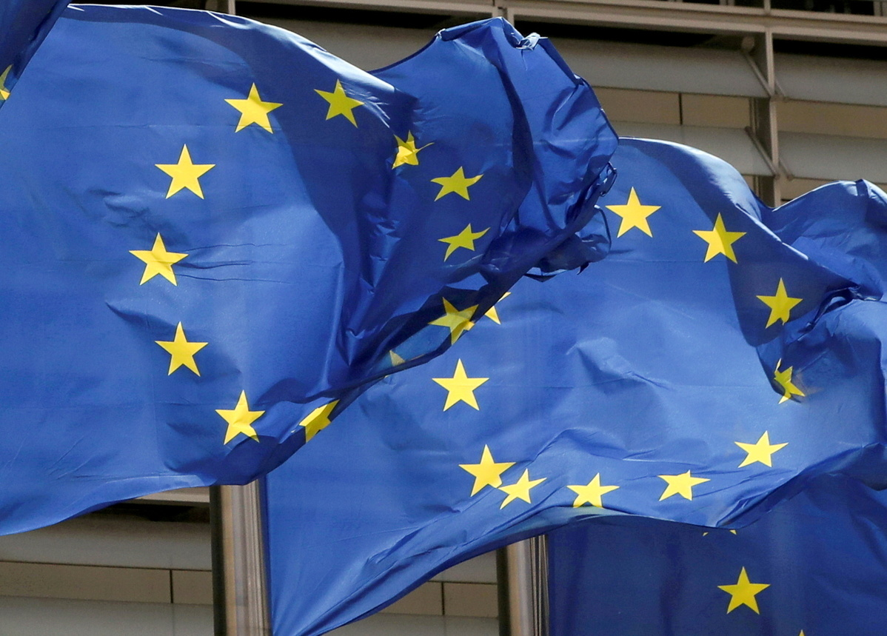
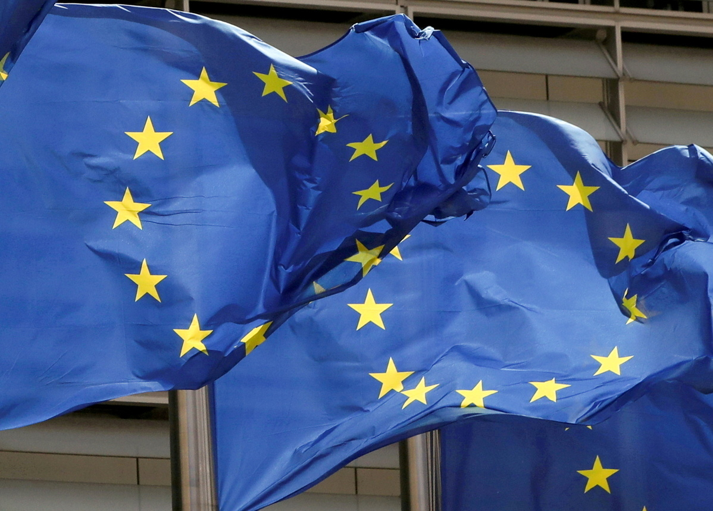
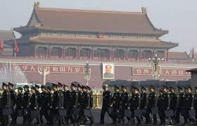
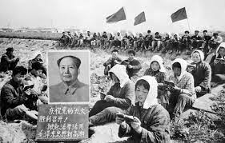

15 years after the war, the geopolitical landscape had went through significant changes. The next countries were the ones that played key roles during this period.
The US was actively involved in global affairs, including military interventions and diplomatic efforts.
 

Emerged as an independent state, it faced internal challenges but remained a significant player in international politics, more specifically in terms of energy resources.
 The European union expanded its membership, incorporating former Eastern bloc countries and fostering economical and political integration.
 

Had a fast economic growth, leading to its emergence as a major economic player. Its influence in international affairs grew a lot.
 It continued to play a role in security, expanding partnerships and adapting to new challenges.


Newly independent states like Ukraine, Belarus, the Baltic States, and Central Asia nations, were navigating their path and and making relationships with various actors.


Countries in the Middle East, including those affected by conflicts, were prominent in global affairs due to regional tensions and international interventions.


Various countries were experiencing political and economical shifts, with some adopting more independent foreign policies.